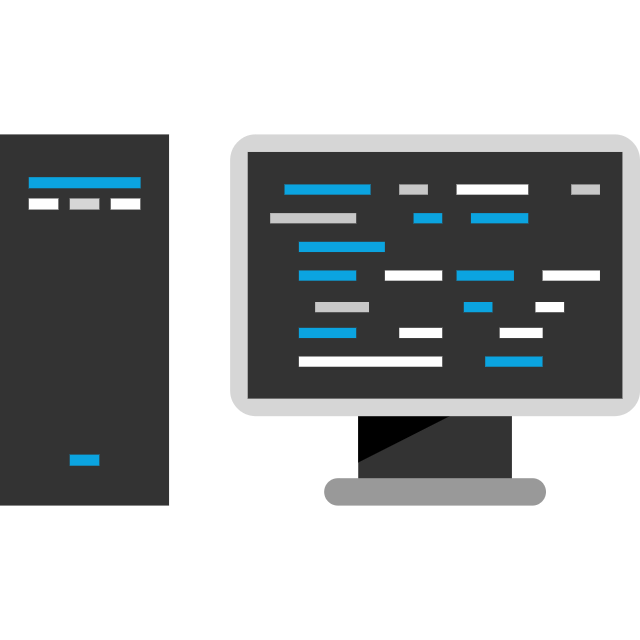

Що таке веб-графіка?
Веб-графіка — це один з ключових елементів сучасних веб-сайтів, який забезпечує візуальну привабливість та взаємодію з користувачем. Вона включає в себе всі зображення, іконки, фони та інші графічні елементи, які використовуються для покращення дизайну і функціональності веб-сторінок. Основне завдання веб-графіки — передавати інформацію, підтримувати брендінг та покращувати користувацький досвід.
Формати зображень у веб-графіці
При створенні веб-графіки важливо вибрати правильний формат зображення, оскільки він впливає на швидкість завантаження сайту, якість картинки та її адаптивність. Основні формати зображень, що використовуються в вебі:
JPEG
Використовується для фотографій або складних зображень з великою кількістю кольорів. Підтримує стиснення з втратами, що дозволяє зменшити розмір файлу, але може погіршити якість зображення.

PNG
Формат з прозорістю та без втрат якості при стисненні. Ідеальний для іконок, логотипів та інших графічних елементів з чіткими краями.
GIF
Використовується для простих анімацій та зображень з обмеженою кількістю кольорів (до 256). Ідеально підходить для створення анімованих зображень невеликого розміру.

SVG
Векторний формат, який зберігає чіткість при будь-якому масштабуванні. Підходить для іконок, логотипів та графічних елементів, які потребують масштабування без втрати якості.

WebP
Сучасний формат, що поєднує переваги JPEG і PNG: підтримує стиснення з втратами та без втрат, при цьому забезпечуючи менший розмір файлу. WebP використовується для оптимізації графіки на сайтах, зменшуючи час завантаження без помітної втрати якості.
AVIF
Новітній формат, який надає кращу якість зображення при ще меншому розмірі файлу порівняно з WebP і JPEG. Підтримує стиснення з втратами та без втрат, а також прозорість.

Приклади коду для оптимізації зображень
Для кращої продуктивності сайту можна використовувати формат WebP, а також fallback (резервний варіант) для браузерів, які його не підтримують.

AVIF забезпечує вищу ступінь стиснення при збереженні якості. Ви можете використовувати його так само, як і WebP, з fallback для старіших браузерів.
Використовуючи атрибут srcset, можна адаптувати зображення для різних розмірів екранів та швидкості інтернету користувача.
Варіант для оптимізації та найкращої якості

Використання векторної графіки для створення ефектів при наведенні
Векторна графіка, особливо у форматі SVG (Scalable Vector Graphics), є чудовим рішенням для використання на веб-сайтах завдяки своїй масштабованості та невеликій вазі файлів. Окрім того, SVG дозволяє легко додавати різноманітні ефекти при наведенні миші (hover), що покращує інтерактивність сайту та не потребує складної анімації.
SVG-спрайти
SVG-спрайт — це набір кількох SVG-графічних елементів, об'єднаних в один файл. Зазвичай він містить іконки або інші векторні елементи, які можна використовувати повторно в різних частинах веб-сайту.
Іконочний шрифт
Іконочний шрифт – це ще один популярний спосіб використання іконок на веб-сайтах. По суті, це шрифт, кожен символ якого є окремою іконкою. Такий метод забезпечує зручність у використанні і легко масштабується, як звичайний текст.
Бізнес портфель
Корзина
Діаграма
Налаштування
Завантажити
Домашня робота
Іконки
Іконка - логотип, векторне зображення, SVG-формат
Іконка - підсилює ефект в блоці - роки досвіду, векторне зображення, SVG-формат
Іконка - підсилює ефект в блоці - кількість виконаних проектів, векторне зображення, SVG-формат
Іконка - вказує на те, що це відео і його можна переглянути, векторне зображення, SVG-формат
Іконка - підсилює ефект в блоці "зв'язатися з нами", векторне зображення, SVG-формат
Іконка - логотип Facebook, векторне зображення, SVG-формат
Іконка - логотип Instagram, векторне зображення, SVG-формат
Іконка - логотип Twitter, векторне зображення, SVG-формат
Елементи дизайну

Елемент дизайну - хмарка, векторне зображення, SVG-формат
Елемент дизайну - лапки, векторне зображення, SVG-формат
Контентні зображення
Основне зображення на сторінці, растрове, JPG - WebP-формат

Превью до відео, растрове зображення, JPG - WebP-формат

Логотип компанії, з якою співпрацюють, растрове зображення, PNG - WebP-формат

Логотип компанії, з якою співпрацюють, растрове зображення, PNG - WebP-формат

Логотип компанії, з якою співпрацюють, растрове зображення, PNG - WebP-формат

Логотип компанії, з якою співпрацюють, растрове зображення, PNG - WebP-формат

Логотип компанії, з якою співпрацюють, растрове зображення, PNG - WebP-формат